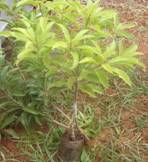
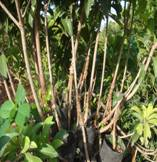
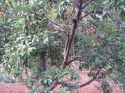
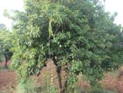

Sapota (Manilkhara achras)
Sapotaceae
Varieties :
The commercially cultivated arieties are (Click on the variety name to see the detailed information)
| CO1, CO 2, CO.3, PKM 1 ,PKM 2 ,PKM 3, PKM-4 , PKM (sa)-5 , Kallipatti, Cricket Ball, Pala, Guthi, Kirtibarathi and Oval. |
|
Soil and climate
It is a tropical crop and can be grown up to an altitude of 1000 metres. It can be grown in all types of soils.
Planting materials
Sapota can be propagated by approach grafting. Grafting can be done on Manilkhara hexandra (Pala) rootstock.
Season of planting
The ideal season of planting is June to December.
Spacing
8 x 8 m (156 plants/ha) for conventional planting.
Adopt high density planting at 8 x 4 m (312 plants / ha) for high productivity |
|  |
 |
Planting
Dig pits of 1 m x 1 m x 1 m size and fill up with top soil mixed with 10 Kg of FYM, 1 Kg of neem cake . Plant the grafts at the centre of the pit with ball of earth intact. The graft joint must be atleast 15 cm above the ground level. After planting stake the plants properly to avoid bending or damage to graft joint during heavy winds.
Irrigation
Irrigate copiously immediately after planting and on the third day and once in 10 days afterwards till the graft establishes.
|
| Approach grafting |
|
Manures and fertilizers (Kg/tree)
Manures and Fertilizers |
1 year old |
Annual increase |
6th year onwards |
| FYM |
10.000 |
10.000 |
50.000 |
| N |
0.200 |
0.200 |
1.000 |
| P |
0.200 |
0.200 |
1.000 |
| K |
0.300 |
0.300 |
1.500 |
|
Manures and fertilizers may be applied in September-October at 45 cm away from the trunk upto the leaf drip and incorporated.
After cultivation
For higher productivity remove the rootstock sprouts, water shoots, criss-cross and lower branches.
Intercropping
Legumes and short duration vegetable crops may be raised as intercrop during pre-bearing stage. Raising of intercrop serve as additional income and enriches the soil fertility by fixing the atmospheric nitrogen.
Plant protection
Pests |
|  |
 |
| Cuscuta infestation |
Loranthus infestation |
|
Leaf webber
Leaf webber can be controlled by spraying Phosalone 35 EC 2 ml/lit.
Hairy caterpillars
Hairy caterpillars are effectively controlled by spraying Chloropyriphos 20 EC or Quinalphos 25EC or Phosalone 35 EC 2 ml/lit of water.
Bud worm
Spraying of Phosalone 35 EC 2 ml/lit or Phosphamidon 40 SL 2 ml/lit or Quinalphos 25EC 2 ml/lit or Carbaryl 50 WP @1 g/lit or Neem Seed Kernel Extract 5 % controls the bud worms effectively.
Diseases
Sooty mould
Sooty mould can be controlled by spraying starch solution. The required concentration can be prepared by boiling 1 Kg maida or starch with 5 lit of water. After cooling, dilute the solution with 20 litres of water. Avoid spraying during cloudy weather.
Harvest
A mature fruit is dull brown in colour and the colour immediately below the skin when scratched is of lighter shade, while in the immature fruits it is green. The mature fruits are harvested by hand picking.
Ripening
Ripen the fruits by keeping a beaker containing 5000 ppm Ethrel + 10 g NaOH pellets in an air tight chamber. (5 ml Ethrel in one lit of water is 5000 ppm).
Yield
Depending up on the variety the fruit yield ranges from 20 - 25 t/ha/year. |
|
|
Market information:
| Growing Districts |
Dindigul, Coimbatore, Virudhunagar, Theni, Namakkal |
| Major Markets in Tamil Nadu |
Dindigul, Coimbatore, Anna fruit market, Koyambedu, Chennai |
| Preferred Varieties and hybrids |
Cricket ball, PKM 1, Kalipatti, PKM 4 |
| Grade Specification |
Based on size and shape, large, medium and small |
|
|
|
|